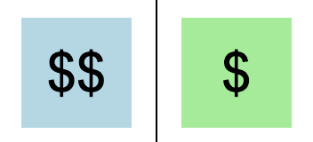
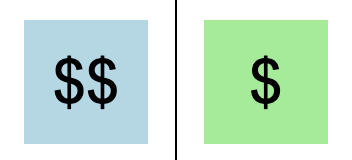

Let's begin by looking at how the freight transport station is arranged. In each trial you will see a screen like this:

This is you:
These are pieces of freight: 
The piece labelled
This is a train:
The train's orientation tells you which way it is moving.
This is a switch that allows you to change the direction that the train is moving in:
The train will turn left, or counterclockwise, each time you hit the switch.
You will only have five moves in each round. That's not very many, but usually it is enough time to do one or two useful things.
This is you:
These are pieces of freight: 
The piece labelled
$$is more valuable, and the piece labelled
$is less valuable.
This is a train:
The train's orientation tells you which way it is moving.
This is a switch that allows you to change the direction that the train is moving in:
The train will turn left, or counterclockwise, each time you hit the switch.
You will only have five moves in each round. That's not very many, but usually it is enough time to do one or two useful things.